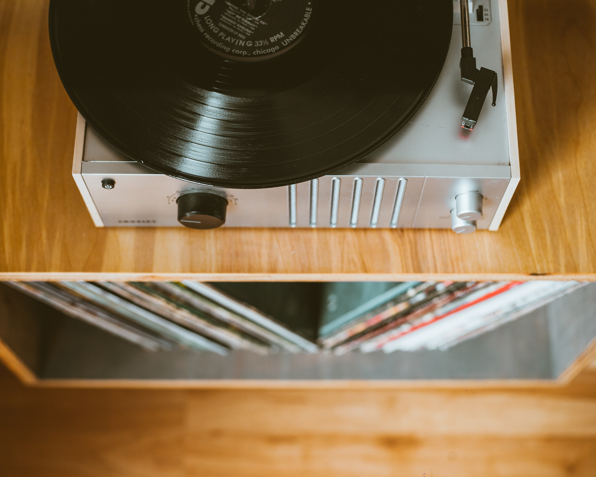
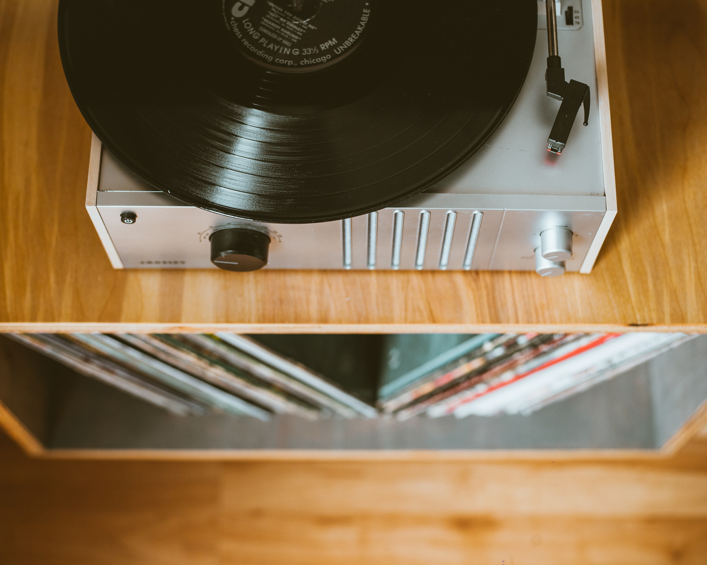

From the gramophone to the record player
It was in 1887 that the gramophone was invented, which became the basis for the modern record player.The popularity of music in the 50s and 60s ensured that the record player was just as popular as the radio. They were always referred to as "record players"; to use the old-fashioned term "gramophone" in the late 50s and early 60s marked you out as a member of the square, older generation.